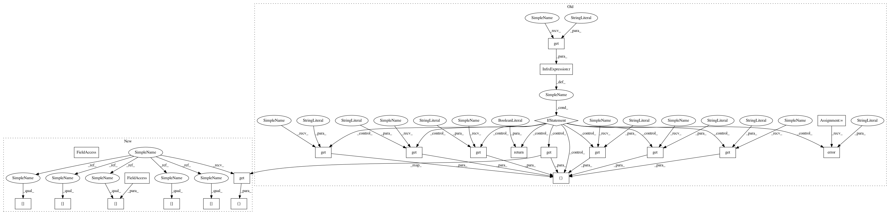

0bd4e15fcb6fb652e19b90d7fbc47b2be37d1172,homeassistant/components/alarm_control_panel/mqtt.py,,setup_platform,#Any#Any#Any#Any#,26
Before Change
def setup_platform(hass, config, add_devices, discovery_info=None):
Setup the MQTT platform.
if config.get("state_topic") is None:
_LOGGER.error("Missing required variable: state_topic")
return False
if config.get("command_topic") is None:
_LOGGER.error("Missing required variable: command_topic")
return False
add_devices([MqttAlarm(
hass,
config.get("name", DEFAULT_NAME),
config.get("state_topic"),
config.get("command_topic"),
config.get("qos", DEFAULT_QOS),
config.get("payload_disarm", DEFAULT_PAYLOAD_DISARM),
config.get("payload_arm_home", DEFAULT_PAYLOAD_ARM_HOME),
config.get("payload_arm_away", DEFAULT_PAYLOAD_ARM_AWAY),
config.get("code"))])
// pylint: disable=too-many-arguments, too-many-instance-attributes
After Change
def setup_platform(hass, config, add_devices, discovery_info=None):
Setup the MQTT platform.
add_devices([MqttAlarm(
hass,
config[CONF_NAME],
config[CONF_STATE_TOPIC],
config[CONF_COMMAND_TOPIC],
config[mqtt.CONF_QOS],
config[CONF_PAYLOAD_DISARM],
config[CONF_PAYLOAD_ARM_HOME],
config[CONF_PAYLOAD_ARM_AWAY],
config.get("code"))])
// pylint: disable=too-many-arguments, too-many-instance-attributes
In pattern: SUPERPATTERN
Frequency: 4
Non-data size: 23
Instances
Project Name: home-assistant/home-assistant
Commit Name: 0bd4e15fcb6fb652e19b90d7fbc47b2be37d1172
Time: 2016-04-06
Author: jaharkes@cs.cmu.edu
File Name: homeassistant/components/alarm_control_panel/mqtt.py
Class Name:
Method Name: setup_platform
Project Name: home-assistant/home-assistant
Commit Name: 0bd4e15fcb6fb652e19b90d7fbc47b2be37d1172
Time: 2016-04-06
Author: jaharkes@cs.cmu.edu
File Name: homeassistant/components/alarm_control_panel/mqtt.py
Class Name:
Method Name: setup_platform
Project Name: home-assistant/home-assistant
Commit Name: deecec5e4e7c4585c544b2fc89ed1e841d675ed7
Time: 2016-04-06
Author: jaharkes@cs.cmu.edu
File Name: homeassistant/components/switch/mqtt.py
Class Name:
Method Name: setup_platform
Project Name: home-assistant/home-assistant
Commit Name: 287f0f4f688a823255bcc36b97dc435a230273a8
Time: 2016-04-06
Author: jaharkes@cs.cmu.edu
File Name: homeassistant/components/binary_sensor/mqtt.py
Class Name:
Method Name: setup_platform
Project Name: home-assistant/home-assistant
Commit Name: c8df06bb9f1bddec6022b56d99e8768a5bb98a00
Time: 2016-04-06
Author: jaharkes@cs.cmu.edu
File Name: homeassistant/components/lock/mqtt.py
Class Name:
Method Name: setup_platform